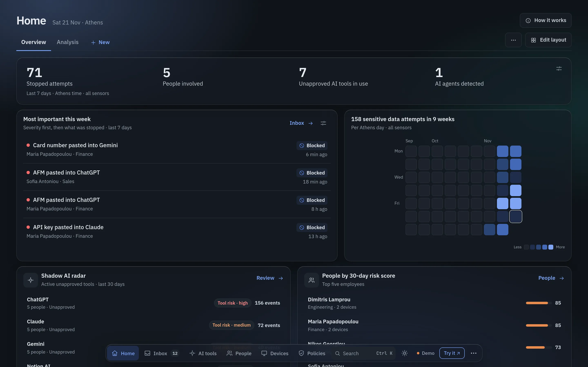
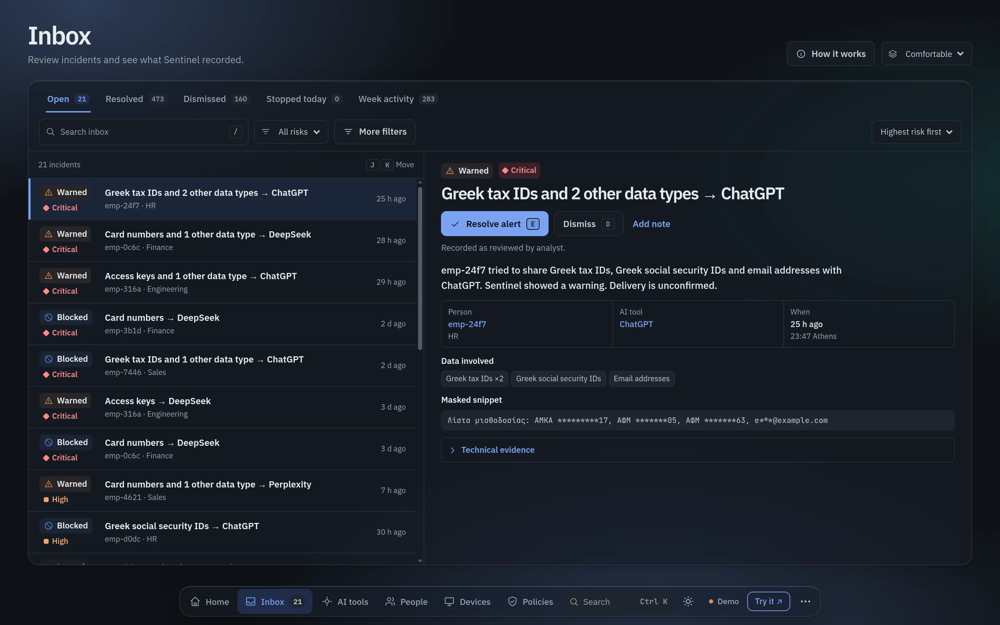

Click or drag on the background to summon cellsTap or swipe sideways to summon cells
Shadow-AI data protection
Use AI. Keep your data.
On-device OCR and masking for every AI tool your company uses, on your own servers. Typed prompts, screenshots and scanned PDFs are checked on the device before anything is sent. The AI tool gets masked text; the employee still gets an answer.
A pasted screenshot or scanned PDF carries IBANs, tax numbers and signatures as pixels. Keyword and pattern rules see none of it.
Competitor research · Nov 2026OCR on images is not new: Netskope, Microsoft Purview, Zscaler, Forcepoint and Palo Alto all document it. What differs is where it runs. Sentinel reads the image on the device, before the data leaves it, and sends nothing to a cloud service for scanning.
Source: the vendors’ own documentation, linked in the table on slide 07.
04 · The law
Regulators already expect control
GDPR4%
of worldwide annual turnover, or €20M if higher, for breaching the core principles, transfers included
NIS22%
of worldwide annual turnover, or €10M if higher, for essential entities
DORAJan 2025
Banks and insurers must manage ICT third-party risk, including the AI services staff use
EU AI ActFeb 2025
Article 4: staff who use AI must have sufficient AI literacy
GDPR Art. 83(5); NIS2 Art. 34(4); DORA, Regulation (EU) 2022/2554; EU AI Act Art. 4.
05 · On-device OCR
Read on the device, checked before sending
01 · Capture
Screenshot or scan
A screenshot or scanned PDF is pasted or attached to an AI tool.
02 · OCR
Read on the device
Text is extracted locally. No image is uploaded anywhere for analysis.
Seven products compared, from each vendor’s own documentation (Nov 2026); links open the page we used. “Not documented” means we found nothing either way.
← → to move
Worked example
A scanned contract, attached in ChatGPT
The contract is an image, so a text filter sees nothing. Sentinel reads it on the device, finds a name, a tax number and an IBAN, and applies your policy before the upload leaves.
ΣΥΜΒΑΣΗ ΠΑΡΟΧΗΣ ΥΠΗΡΕΣΙΩΝ
Πελάτης:
Μαρία Παπαδοπούλου
ΑΦΜ 123456783
IBAN GR16 0110 1250 0000 0001 2300 695
Αμοιβή: €18.400 ανά έτος
contract_signed.png · illustrative document
The employee sees
Blocked
“Client and payment data must not go into public AI tools. Use Microsoft Copilot with your work account instead.”
Your dashboard records
Where
Sales · ChatGPT · image
Found
name, AFM, IBAN
Action
blocked
Stored as
GR16 **** **** 0695
Terminal AI agents
The leak a browser filter never sees
Coding agents such as Claude Code and Codex run in the terminal. They read files, run commands and talk to their AI service on their own, with no browser and often around the proxy. Sentinel’s Linux sensor watches what their processes do, from the kernel. It runs on Linux only for now, not yet on macOS or Windows.
what the sensor sees
~/work $ claude "find churn risk in customers.csv"
node:claudeconnectapi.anthropic.comAI service
bashexechead -200 crm/customers.csv
headopencrm/customers.csvcustomer data
bashexecgrep -r "password" ~/
grepopen~/.vpn/passwords.txtdecoy file
taint_flowcustomer data → Anthropic, in one agent’s process treecanary_touchdecoy file opened: nobody has a reason tofrozenpolicy says block: the agent is paused, reversibly
Illustrative session. Your server gets labels, the process chain and the evidence, never file contents or prompts.
01
Data flowing to an AI
A sensitive file read inside a process tree that talks to an AI service is reported as a taint flow.
02
Decoy files
Plant fake secrets. Any process that opens one is reported at once: there is no innocent reason to.
03
Agents at work
The think, run, think-again rhythm of an agent shows in its process tree, whatever the agent prints.
04
Local models
Model files loaded on the device are listed, so offline AI is in the inventory too.
05
Freeze, if you choose
With a block policy, a decoy or taint hit pauses the agent’s processes until the policy changes. Off by default.
28 / 30
Codex agent sessions detected
95% interval: 78.7–98.2%
30 / 30
Claude (Haiku) agent sessions detected
95% interval: 88.6–100%
23 / 23
Codex sessions told to avoid detection, still detected
95% interval: 85.7–100%
0
false alarms in about 15 hours of developer desktops
At most about 0.2 per hour at 95% confidence; more hours of data will narrow this.
Early results, from small numbersEvery figure above comes with its 95% interval, and the intervals are wide because the runs are few: 30 sessions per agent, 23 adversarial sessions and about 15 hours of normal desktop use, all recorded on one virtual-machine setup. The next step is a larger evaluation, with more sessions, more agents and more machines, which will narrow every interval above.
Held-out recordings in a Linux VM, scored once with the configuration fixed in advance. Not caught yet: an agent driving a local model (aider), and fixed scripts that call an AI in a loop. Linux only today, using eBPF.
Why Sentinel
Built for the data your company actually handles
01
On-device OCR
Screenshots and scanned PDFs are read on the device.
02
Raw data stays local
Real values never leave the employee’s machine.
03
Self-hosted
Dashboard and logs run on your own servers.
04
Greek identifiers
AFM, AMKA, Greek IBANs and names, checked with checksums.
05
Every AI surface
Browser, desktop apps, MCP, local models, and terminal agents on Linux.
06
Redaction
Employees still get an answer. Log, warn or block also available.
07
Company accounts
Personal AI accounts refused; approved tools stay open.
08
Fail-closed by default
Fails closed by default: if a scan fails, the send is blocked. A policy can switch to fail open.
How it fits
Three sensors, one server you own
Each sensor covers a different way data reaches an AI. They all report to the same server, on your infrastructure, and follow the same policy.
On each computer
Browser extension
Chrome and Edge. Checks typed prompts, pastes and files inside the page, before they are sent.
Desktop agent
Other browsers and desktop apps, through a local proxy for AI sites only. Reads screenshots and scans.
Linux EDR sensor
Terminal AI agents and local models, seen from the kernel. Linux only for now.
masked eventspolicy, every 30 s
On your servers
Sentinel server
Scores every event, stores it in PostgreSQL and sends high-risk alerts to your SIEM or chat. One Docker Compose stack.
Your security team
Dashboard
Incidents, policies and the AI tool inventory. People appear as pseudonyms until a reviewer reveals one.
Nothing goes to Panopticon or to any third party: the text and files are checked on the device, and the server only receives what was found, a masked extract and a keyed hash.
See it work
The whole story, live
Two and a half minutes on the real product: the browser extension on claude.ai, the desktop agent reading a scanned contract, the Linux sensor catching a terminal agent, and the dashboard.
0:00 / 2:31
It follows the site’s light or dark theme. Captions are in the picture; the full transcript is below.
Transcript
Use AI. Keep your data. Employees paste client data into AI tools every day. Sentinel checks it on the device, before anything leaves, and shows your security team what happened.
A client IBAN, pasted into claude.ai01 · Browser. The browser extension reads what is pasted, inside the page, and applies your policy before anything is sent.
Someone in Sales pastes a client IBAN into claude.ai
The extension checks it in the page, before anything is sent. Policy for Sales: Redact
The IBAN is masked in place. Only GR16 … 695 is left
Claude gets masked text, and the employee still gets an answer
A scanned contract, sent as an image02 · Desktop apps. Text filters see nothing in a picture. The desktop agent reads it on the device and finds the name, the tax number and the IBAN.
A desktop AI app, through the Sentinel agent. The file: a scanned contract, as an image
OCR reads the image on the device…
…finds a name, an ΑΦΜ and an IBAN, and blocks the upload before it leaves
The leak a browser filter never sees03 · Terminal agents. Coding agents read files and call their AI on their own. Sentinel’s Linux sensor follows their processes, from the file they read to the AI they send it to.
Claude Code in a terminal: no browser, no extension
The Linux sensor follows the process tree: terminal → bash → claude → cat
A sensitive file was read, then the same tree talked to api.anthropic.com
Every alert explains itself: the evidence, in bits
One calm place to see and decide04 · Dashboard. On your own servers. Masked evidence only, pseudonyms by default, and policies that inherit by department.
Home: the week at a glance
Shadow AI radar and the riskiest people, all pseudonymous
Every board is yours to arrange: drag widgets, resize them, add new ones
The claude.ai paste from earlier: who, which tool, what was masked. Never the prompt itself
AI tools: every tool in use, approved or not, rated from facts
Policies inherit field by field. Sales overrides one field: Redact
People are pseudonyms by default
A reviewer can reveal a name when there is a reason, and every reveal is logged
Use AI. Keep your data. Start with a free 30-day Discovery audit: see which AI tools your company uses, and what data goes into them.
The dashboard
One calm place to see and decide
Runs on your servers. New detections appear within seconds; policy changes roll out in about 30.


Home The week at a glance: stopped attempts, the most important incidents, shadow AI and the riskiest people.
Home
Stopped attempts, people involved, unapproved AI tools in use and AI agents detected, last 7 days.
Most important this week
Severity first, then what was stopped: an AFM pasted into an unapproved tool, a decoy file opened by an agent.
Shadow AI radar
Unapproved tools in use, ranked by tool risk and event count.
Incident inbox
Incidents ranked by risk. Repeated traffic folds into one incident, so 71 similar detections need one decision.
Why it was flagged
Each incident explains itself, for example a decoy “VPN passwords” file opened by an agent process.
Live feed
New detections appear within seconds.
Policies and AI tools
The effective policy in plain words, per company, department or person. Fails closed by default: if a scan fails, the send is blocked. A policy can switch to fail open. Every tool that needs review, with who used it and whether sensitive data was involved.
Devices and people
Desktop agents (Linux and macOS), browser extensions and the Linux EDR sensor, with status and policy version. A 30-day risk score per person, highest first.
Questions
What IT asks first
Where do our prompts and files go?
They are checked on the device. Your own server receives the type of data found, how many, a masked extract such as GR16 **** **** 0695 and a keyed one-way hash. Nothing reaches Panopticon or any third party: the server and the dashboard run on your infrastructure.
Do we need to install a certificate on every computer?
Not for the browser extension. The desktop agent reads HTTPS to AI sites only (a proxy auto-config file sends just those hosts through it), so its certificate must be trusted on each computer, as with any inspecting proxy. Apps that pin their certificates are out of its reach; on Linux, the EDR sensor still sees terminal agents.
Which operating systems are supported?
Browser extension: Chrome and Edge on any desktop system. Desktop agent: macOS and Linux; Windows support is written but not yet tested on real machines. EDR sensor: Linux only, not yet macOS or Windows. On a Mac, the desktop agent also checks terminal tools that use the proxy settings it sets up (tested on macOS). Seeing terminal agents at the process level, whatever they do with the network, needs the EDR sensor, which is Linux-only.
Will it slow people down?
The extension checks a message in about a millisecond. Only traffic to AI sites goes through the desktop agent; everything else connects directly, as before.
What if someone turns a sensor off?
Every sensor checks in with the server. If the extension or the EDR sensor goes quiet while the same computer is still online, the server raises a high-risk alert.
Does Sentinel send our data to an AI to analyse it?
No. Detection is rules and checksums, plus small models for names and project codenames that run locally. No prompt is sent to a language model for analysis.
Next step
Use AI. Keep your data.
Start with the free 30-day Discovery audit for up to 200 users. You get an inventory of every AI tool in use and a risk report mapped to GDPR, the AI Act and NIS2.